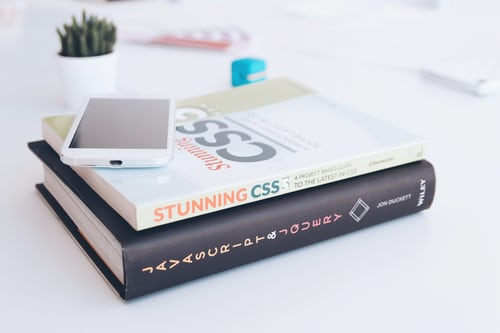

Cascading Style Sheets (CSS)are a way to change the look of HTML and XHTML web pages. CSS was designed by the W3C, and is supported well by most modern web browsers. The current version of CSS is CSS3. CSS4 is available, but is split into parts.

One advantage to using CSS is a web page can still be displayed, even if the CSS is not working or removed. CSS code is saved in files with the .css file extension.